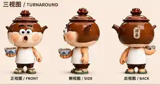

澳门凉茶铺
凉茶铺不仅是饮品消费场所，也承载着街坊日常交流、信息交换与情感连接。项目希望保留这种市井温度。
PROJECT 05 / ORIGINAL IP DESIGN · MACAU
PROJECT CASE / TEA-BOY
早 C 晚 A，不如饮杯澳门热美式啦！
一个外表像退休大爷、内心却是 95 后的凉茶铺主理人。以澳门凉茶文化为灵感，把传统凉茶铺的烟火气，转化为年轻人能够理解、亲近与分享的角色故事。
查看项目内容 ↓
PROJECT OVERVIEW / 项目概述
茶煲仔是一项以澳门凉茶配制技艺与凉茶铺文化为灵感的原创文化主题 IP 概念设计。项目以澳门老街市井生活为视觉土壤，以当代年轻人的情绪需求为传播切入点，尝试让传统文化以角色化、内容化的方式进入日常交流。
项目属性：个人原创文化主题 IP 概念设计，并非官方认证或授权的非遗 IP 项目。
02 / CULTURAL INSIGHT
凉茶铺不仅是饮品消费场所，也承载着街坊日常交流、信息交换与情感连接。项目希望保留这种市井温度。
以年轻人熟悉的生活梗切入，回应职场压力与对松弛生活的期待，不用说教的方式讲传统文化。
把凉茶器具转化为角色，把凉茶铺转化为故事场景，让文化符号具备可识别、可传播、可延展的形象载体。
03 / CHARACTER & STORY
茶煲仔原本是一个在写字楼里熬夜改 PPT 的“卷王”。一次身体亮起警讯后，他开始重新思考生活的意义，辞职回到澳门老街，接手家族传承的凉茶铺。
他穿着老头衫、踩着人字拖，慢悠悠地熬着一锅凉茶。看见年轻人依然困在“早 C 晚 A”的节奏里，便端起青花瓷碗，用广普劝大家：“不如饮杯澳门热美式啦！”
他卖的从来不只是凉茶，更是一种生活态度：慢慢来，先饮杯茶。
04 / VISUAL IDENTITY
角色以传统凉茶瓦煲作为身体主体，融合凉茶器具、澳门街坊日常与潮玩化比例，建立一眼可辨的视觉轮廓。
瓦煲身体、壶盖头顶、青花瓷碗道具，让凉茶器具成为角色的一部分。
老头衫、人字拖与澳门老街凉茶铺氛围，构成角色日常生活的视觉背景。
以凉茶“先苦后甘”的体验，呼应“先慢后快”的生活态度，让文化通过角色行为自然表达。
壶盖象征对火候的执着；青花瓷碗承载凉茶文化记忆；人字拖强化街坊生活气息；袅袅热气成为角色动态表达的重要符号。
05 / CHARACTER EXTENSIONS
发呆、认真吹茶、眨眼、偷笑，以及急到冒烟、开心到飞起、委屈和震惊等情绪表达。
晨间续命、深夜劝导、专注熬茶、街坊互动与思考人生等日常动作构想。
以凉茶铺为核心空间，延伸街坊交流、年轻人倾诉与非遗技艺体验等情境。
06 / CONTENT STRATEGY
以高频、轻量的情绪表达建立社交传播与角色亲近感。
通过角色行为和生活片段丰富性格，增强用户对角色的熟悉度。
用连续故事讲述角色关系与地方文化，持续积累世界观。
以过程记录和场景内容强化真实感与沉浸感。
通过跨品牌内容合作拓展触达场景与传播人群。
07 / COMMERCIAL POSSIBILITIES
以下为企划案提出的商业化方向与概念设想，并非已落地的商业合作或销售成果。
围绕日常、情绪、节气与澳门地标主题，开发不同表情、动作和配件的系列角色概念。
延展帆布袋、钥匙扣、手机壳、马克杯、服饰、文具、徽章与亚克力立牌等品类。
构想青花瓷茶具套装、草本香氛、家居摆件与软装，让角色融入日常生活空间。
构想澳门热美式吧、凉茶配制技艺体验工坊与节庆快闪店，将角色体验延伸至真实场景。
PROJECT 05 / TEA-BOY